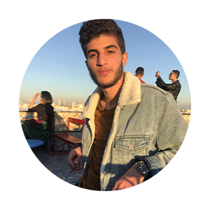

Testour une ville Andalouse pas loin des rives de Majrda, seul fleuve permanent en Club Camping Tunisie. Dans cette région existe une grotte appelée Ghar Kriz dans la région agricole de Ain Younes. Une grotte qui se développe sur des centaines de mètres à accès facile et où niche une grande colonie de chauves-souris. Cette grotte est classée parmi les grottes les plus sublimes de la Tunisie dans le cadre d'initiation pour la spéléologie.
Programme :
07h00 : Départ vers Testour
09h00: Début de la randonnée
10h00: Début de l'aventure dans la grotte
12h30 : Pause déjeuner
13h00 : On revient vers le bus
14h00 : Visite du site Ain Tounga
16h30: Départ vers Tunis
Difficulté : Un Peu Difficile

| Avis Positives |
|

Boumnijel Rayen
"La meilleure association et une équipe d’enfer je recommande" |
 Clara Olive
"Très professionnel, la sécurité, la bonne ambiance tout y est !" |
| Avis Négatives |
Charlotte Dubois
"Avant de commencer nous demandons conseil à l’agent présent car la pluie tombe chaque jour depuis le début de notre séjour, il nous dit pas de soucis avec un enfant de 4ans alors le chemin est impraticable avec un enfant en bas âge." |
 Louis Bernard
"Chemin jaune en 45 mins dans un sous bois qui n’a rien d’exotique!!!! Marches crabes boues marches crabes boues ...... Rien à voir, parc régional sans aucun intérêt si ce n’est pour marcher et changer des plages" |